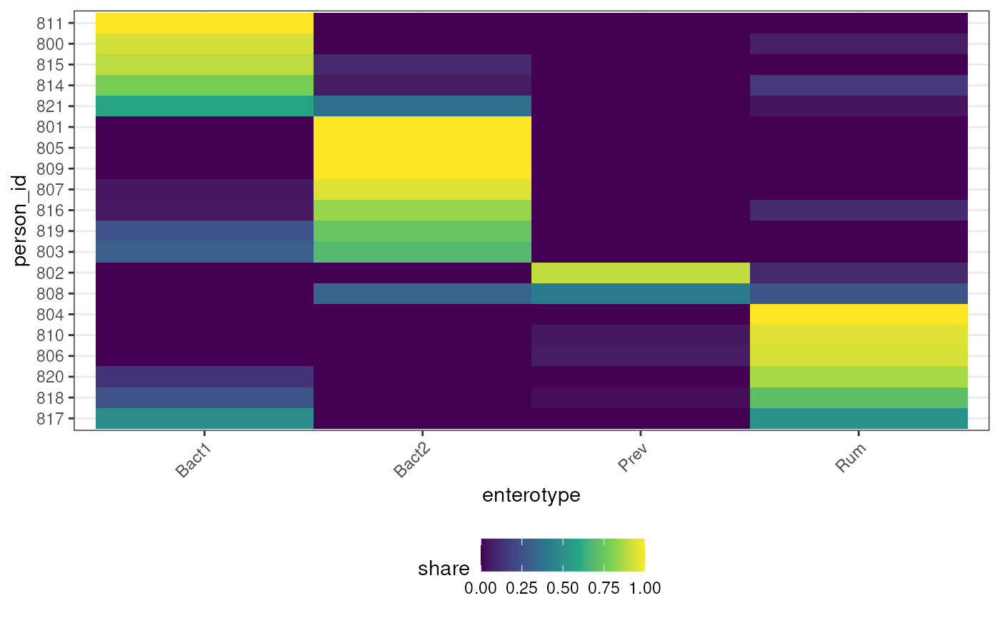
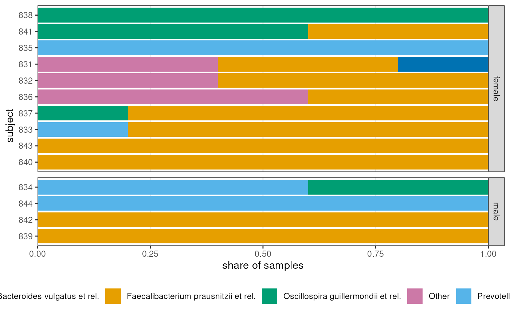

Plot the share of samples of each subject in each state
Source:R/AllGenerics.R, R/plotStates.R, R/zzz-mae.R
plotStates.RdplotStates() draws, for each subject, the share of its samples in
each state, such as a community state type, as a subject by state
heatmap or as stacked bars.
Arguments
- x
a
SummarizedExperimentobject.- ...
- state.col
Character scalar. Specifies the column fromcolData(x)that contains the state of each sample, such as a community type or the dominant taxon.- group
Character scalar. Specifies the column fromcolData(x)that identifies subjects.- group.by
Character scalar. Specifies the column fromcolData(x), constant within subjects, that splits the subjects into panels. (Default:NULL)- layout
Character scalar. Draws a subject by state heatmap ("heatmap") or one stacked bar per subject ("bar"). (Default:"heatmap")- order.by
Character scalar. Orders subjects by their most common state, then by its share ("dominant"), or by hierarchical clustering of their shares ("cluster"). (Default:"dominant")- experiment
Character scalarorinteger scalar. For aMultiAssayExperiment, the experiment to plot; its samples get thecolDataofx. (Default:1L)
Details
Shares are of the samples with a state: samples without one are left out. Each sample counts once, whatever the time to the next sample, so subjects should be sampled at regular times. The heatmap follows the community state type frequencies of Gajer et al. (2012), clustered into community classes, and the bars those of DiGiulio et al. (2015), split by pregnancy outcome.
References
Gajer P, et al. (2012). Temporal dynamics of the human vaginal microbiota. Science Translational Medicine 4(132):132ra52. doi:10.1126/scitranslmed.3003605
DiGiulio DB, et al. (2015). Temporal and spatial variation of the human microbiota during pregnancy. PNAS 112(35):11060-11065. doi:10.1073/pnas.1502875112
Examples
# Share of daily samples of each person in each enterotype. Samples
# without a cell count have the enterotype "NA".
data("temporalMicrobiome20", package = "miaTime")
tse <- temporalMicrobiome20
tse$enterotype[tse$enterotype == "NA"] <- NA
plotStates(tse, state.col = "enterotype", group = "person_id")

# Dominant genus of the subjects with at least five samples, by sex
data("hitchip1006", package = "miaTime")
tse <- mia::addDominant(hitchip1006, name = "dominant", n = 4)
tse <- tse[, tse$subject %in% names(which(table(tse$subject) >= 5))]
plotStates(tse, state.col = "dominant", group = "subject",
group.by = "sex", layout = "bar", order.by = "cluster")
